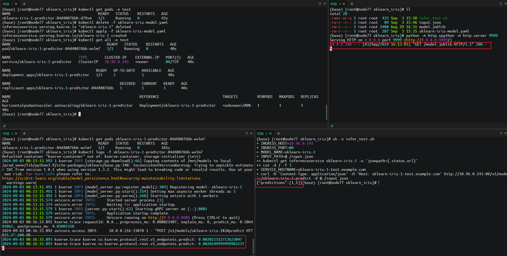

Kserve(模型服务器)的安装部署
前置说明
Kserve 有多种安装部署模式，包括 Serverless、ModelMesh 以及 Kubernetes Deployment，下文的安装模型采用的 Kubernetes Deployment 中的 RawDeployment 模式，其他安装详见官方文档，
官方文档提到安装 Kserve 需要依赖 Istio 和 Cert Manager、由于 Isito 组件比较重且不太了解，考虑到我的目标是为了快速完成 kserve 的部署，所以就使用 Ingress-nginx 来替代了 Istio，效果是一样。另外安装时需要注意版本对应关系
依赖组件
ingress-nginx 部署
该组件采用 Helm 安装
| Bash |
|---|
| # 添加repo
helm repo add ingress-nginx https://kubernetes.github.io/ingress-nginx
# 下载ingress-nginx.tgz
wget https://github.com/kubernetes/ingress-nginx/releases/download/helm-chart-4.11.2/ingress-nginx-4.11.2.tgz
# 解压
tar -zxf ingress-nginx-4.11.2.tgz
# 安装
helm install ingress-nginx ./ingress-nginx --namespace ingress-nginx --create-namespace
# 由于ingress-nginx依赖的镜像被墙无法下载，所以需要曲线救国，主要删除value.yaml中的镜像hash,需要在执行节点下载
docker pull k8s.kubesre.xyz/ingress-nginx/kube-webhook-certgen:v1.4.3
docker tag k8s.kubesre.xyz/ingress-nginx/kube-webhook-certgen:v1.4.3 registry.k8s.io/ingress-nginx/kube-webhook-certgen:v1.4.3
docker pull k8s.kubesre.xyz/ingress-nginx/controller:v1.11.2
docker tag k8s.kubesre.xyz/ingress-nginx/controller:v1.11.2 registry.k8s.io/ingress-nginx/controller:v1.11.2
|
| Bash |
|---|
| (base) [root@node77 ingress-nginx]# helm install ingress-nginx ./ingress-nginx --namespace ingress-nginx
NAME: ingress-nginx
LAST DEPLOYED: Fri Aug 30 19:34:39 2024
NAMESPACE: ingress-nginx
STATUS: deployed
REVISION: 1
TEST SUITE: None
NOTES:
The ingress-nginx controller has been installed.
It may take a few minutes for the load balancer IP to be available.
You can watch the status by running 'kubectl get service --namespace ingress-nginx ingress-nginx-controller --output wide --watch'
An example Ingress that makes use of the controller:
apiVersion: networking.k8s.io/v1
kind: Ingress
metadata:
name: example
namespace: foo
spec:
ingressClassName: nginx
rules:
- host: www.example.com
http:
paths:
- pathType: Prefix
backend:
service:
name: exampleService
port:
number: 80
path: /
# This section is only required if TLS is to be enabled for the Ingress
tls:
- hosts:
- www.example.com
secretName: example-tls
If TLS is enabled for the Ingress, a Secret containing the certificate and key must also be provided:
apiVersion: v1
kind: Secret
metadata:
name: example-tls
namespace: foo
data:
tls.crt: <base64 encoded cert>
tls.key: <base64 encoded key>
type: kubernetes.io/tls
(base) [root@node77 ingress-nginx]# kubectl get service --namespace ingress-nginx ingress-nginx-controller --output wide --watch
NAME TYPE CLUSTER-IP EXTERNAL-IP PORT(S) AGE SELECTOR
ingress-nginx-controller LoadBalancer 10.96.1.190 <pending> 80:32702/TCP,443:32064/TCP 37s app.kubernetes.io/component=controller,app.kubernetes.io/instance=ingress-nginx,app.kubernetes.io/name=ingress-nginx
|
CertManager 部署
本组件采用 YAML 方式安装，若使用 Helm 安装，请参考：Link
| Bash |
|---|
| kubectl apply -f https://github.com/cert-manager/cert-manager/releases/download/v1.15.3/cert-manager.yaml
(base) [root@node77 cert-manager]# kubectl get pods --namespace cert-manager
NAME READY STATUS RESTARTS AGE
cert-manager-cainjector-5fd6444f95-rbczx 1/1 Running 0 80s
cert-manager-d894bbbd4-zd8ns 1/1 Running 0 80s
cert-manager-webhook-869674f96f-cgp92 1/1 Running 0 80s
|
kserve 部署
安装
| Bash |
|---|
| kubectl apply -f https://github.com/kserve/kserve/releases/download/v0.13.0/kserve.yaml
kubectl apply -f https://github.com/kserve/kserve/releases/download/v0.13.0/kserve-cluster-resources.yaml
# 修改 inferenceservice-config 的部署模型为 RawDeployment
kubectl patch configmap/inferenceservice-config -n kserve --type=strategic -p '{"data": {"deploy": "{\"defaultDeploymentMode\": \"RawDeployment\"}"}}'
# 将kserve.yaml中ingressClassName的值修改为nginx，默认值为istio
ingress: |-
{
"ingressClassName" : "nginx",
}
|
测试
- 新建一个 Namespace
不要放在默认 namespace 下，很重要很关键，
| Bash |
|---|
| kubectl create namespace test
|
- 创建一个 inferenceservice
官方的案例的 yaml 中，并没有指定 namespace，如果执行下列命令就会创建到默认 namespace 下，后续部署模型就会遇到问题，该问题排查了好久。
| Bash |
|---|
| kubectl apply -n test -f - <<EOF
apiVersion: "serving.kserve.io/v1beta1"
kind: "InferenceService"
metadata:
name: "sklearn-iris"
spec:
predictor:
model:
modelFormat:
name: sklearn
storageUri: "gs://kfserving-examples/models/sklearn/1.0/model"
EOF
|
- 对上述内容进行修改。
- 新建 yaml 文件(sklearn-iris-model.yaml)
| YAML |
|---|
| apiVersion: "serving.kserve.io/v1beta1"
kind: "InferenceService"
metadata:
name: "sklearn-iris-1"
namespace: "test" # 这个很关键很重要
spec:
predictor:
model:
modelFormat:
name: sklearn
storageUri: "http://172.16.x.xx:9999/model.joblib"
|
该步骤非必须，如果可以直接从 gs 下，则忽略这一步。启动外部服务的目的是能够让 kserve 能够去下载模型
| Bash |
|---|
| (base) [root@node77 test-kserve-deploy]# python -m http.server 9999
Serving HTTP on 0.0.0.0 port 9999 (http://0.0.0.0:9999/) ...
127.0.0.1 - - [03/Sep/2024 12:19:13] "GET / HTTP/1.1" 200 -
(base) [root@node77 kserve]# curl 127.0.0.1:9999
<!DOCTYPE HTML>
<html lang="en">
<head>
<meta charset="utf-8">
<title>Directory listing for /</title>
</head>
<body>
<h1>Directory listing for /</h1>
<hr>
<ul>
<li><a href="mlflow-iris.yml">mlflow-iris.yml</a></li>
<li><a href="mlflow-wine-model.yaml">mlflow-wine-model.yaml</a></li>
<li><a href="mlflow_wine/">mlflow_wine/</a></li>
<li><a href="mlflow_wine.zip">mlflow_wine.zip</a></li>
<li><a href="my_model/">my_model/</a></li>
<li><a href="my_model.zip">my_model.zip</a></li>
<li><a href="python_env.yaml">python_env.yaml</a></li>
<li><a href="python_model.pkl">python_model.pkl</a></li>
<li><a href="sklearn_iris/">sklearn_iris/</a></li>
<li><a href="tmp/">tmp/</a></li>
</ul>
<hr>
</body>
</html>
(base) [root@node77 kserve]#
|
| Bash |
|---|
| # 在此目录下
(base) [root@node77 sklearn_iris]# ls
model.joblib sklearn-iris-model.yaml
# 执行命令
kubectl apply -f sklearn-iris-model.yaml
|
| Bash |
|---|
| (base) [root@node77 sklearn_iris]# kubectl get all -n test
NAME READY STATUS RESTARTS AGE
pod/sklearn-iris-1-predictor-84d48876bb-wvlm7 1/1 Running 0 40s
NAME TYPE CLUSTER-IP EXTERNAL-IP PORT(S) AGE
service/sklearn-iris-1-predictor ClusterIP 10.96.0.243 <none> 80/TCP 40s
NAME READY UP-TO-DATE AVAILABLE AGE
deployment.apps/sklearn-iris-1-predictor 1/1 1 1 40s
NAME DESIRED CURRENT READY AGE
replicaset.apps/sklearn-iris-1-predictor-84d48876bb 1 1 1 40s
NAME REFERENCE TARGETS MINPODS MAXPODS REPLICAS AGE
horizontalpodautoscaler.autoscaling/sklearn-iris-1-predictor Deployment/sklearn-iris-1-predictor <unknown>/80% 1 1 1 40s
|
| Bash |
|---|
| (base) [root@node77 sklearn_iris]# kubectl get inferenceservice -n test
NAME URL READY PREV LATEST PREVROLLEDOUTREVISION LATESTREADYREVISION AGE
sklearn-iris-1 http://sklearn-iris-1-test.example.com True 5m48s
|
使用 ingress 测试
| Bash |
|---|
| (base) [root@node77 sklearn_iris]# kubectl get svc -n test
NAME TYPE CLUSTER-IP EXTERNAL-IP PORT(S) AGE
sklearn-iris-1-predictor ClusterIP 10.96.0.243 <none> 80/TCP 7m2s
|
| JSON |
|---|
| {
"instances": [
[6.8, 2.8, 4.8, 1.4],
[6.0, 3.4, 4.5, 1.6]
]
}
|
| Bash |
|---|
| #!/bin/bash
# nginx ingress 的访问地址
INGRESS_HOST=10.96.0.243
INGRESS_PORT=80
MODEL_NAME=sklearn-iris-1
INPUT_PATH=@./input.json
SERVICE_HOSTNAME=$(kubectl get inferenceservice ${MODEL_NAME} -o jsonpath='{.status.url}' | cut -d "/" -f 3)
# 使用 curl 发起请求
curl -H "Content-Type: application/json" -H "Host: ${SERVICE_HOSTNAME}" http://${INGRESS_HOST}:${INGRESS_PORT}/v1/models/$MODEL_NAME:predict -d $INPUT_PATH
|
- 执行测试
sh -x infer_test.sh
- 测试结果如下图
